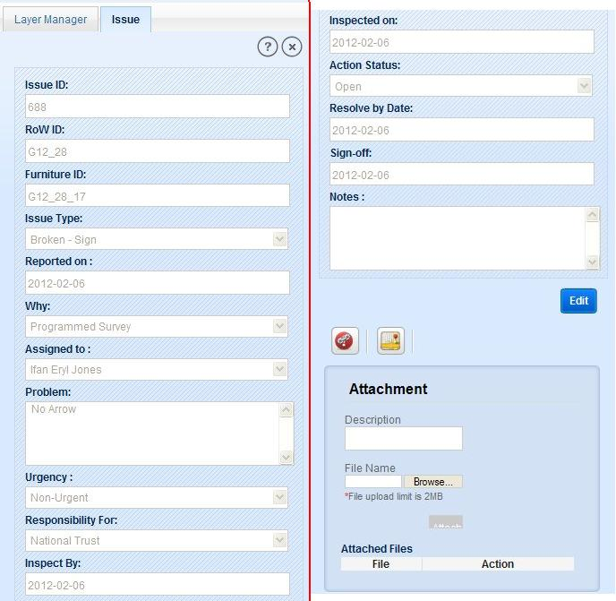
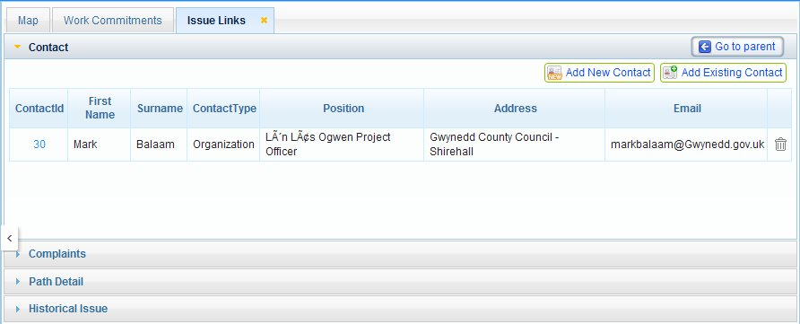
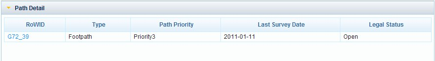
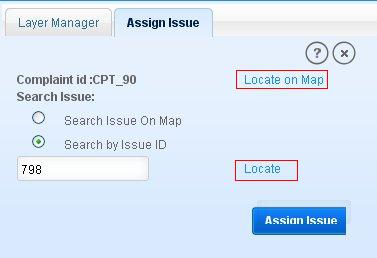

In this module user is facilitated with the below functionalities:
These functionalities are described below in details:
In this functionality user is allowed to view the details of a selected issue. Create Issue layer as Active layer and follow the steps below:

Fig.1 Issue Details
This functionality allows users to add files (up to 2MB) to the selected issue. File could be of text type, image and other type. For this application displays an attachment box with the list of already attached files.
To add an attachment:
To remove an attachment:
Edit functionality allows user to edit some of the issue fields. To edit information of an issue:
With this functionality user can view contacts, path and complaints related to selected issue. User can also view the historical issues at that location in this section.
Click on Issue Link icon in Issue information tab. Application opens a new tab ‘Issue Links’ on main window. This tab includes accordions: Contact (default open), Complaints, Path Detail and Historical Issue.
These are described below:
In this section of issue links user can view the contractor’s details associated with the selected issue (if any exists). And user can also add new contact to selected issue.

Fig.2 Issue Links with Contact accordion
In this accordion a button ‘Go to Parent’ is available. If the selected issue details is closed from the left panel, click on ‘Go to Parent’. Application displays the issue details in left panel again.
In complaints section user can view the list of complaints for those selected issue is created or assigned. Click on Complaint ID of a complaint record. Application displays the complaint information in left panel. If issue has been directly created on any feature, no complaint details will exist for that issue.
In this section user can view the details of the parent path of the selected Issue or the feature’s parent path for which issue created. Click on Path Details accordion, application expands the accordion with path details. Click on ‘RoW ID’ of path, application displays the path information in left panel. .

Fig.3 Parent Path details of Issue
In this section user can view the historical issues details for same location (if any historical issue exists).
This tool allows user to zoom to selected issue on map. Click on ‘Locate on Map’ tool, application zooms to that issue on map canvas.
User can assign an existing issue to a complaint, if issue is already created for same problem. And issue should not be already created or assigned for that complaint.

Fig.3 Assign an issue for a complaint